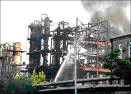
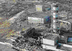
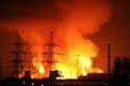
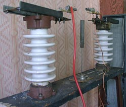
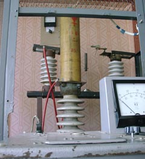

Научная работа
Ежегодно убытки во всем мире от аварий и катастроф на промышленных предприятиях составляют в среднем 150 миллиардов долларов.

Обеспечение безопасности промышленного предприятия при его эксплуатации — это достижения нормируемого уровня взрыво- и пожаробезопасности на нем, т. е. исключение взрывов (пожаров) за счет надежной работы средств защиты, которые реагируют на недопустимое изменение электрических и технологических параметров оборудования, четкой работы обслуживающего персонала.
Промышленное предприятие (взрывопожароопасный цех) считается безопасным, если удается доказать, что вероятность появления катастрофы в течение года, при его эксплуатации будет меньше или равна величине 1.10-6.

Используя норму 1.10-6 задачу по обеспечению безопасности промышленного предприятия можно сформулировать следующим образом: какую статистическую информацию с технологического объекта нужно собрать в течении года, чтобы определить уровень его безопасности (взрывобезопасности, пожаробезопасности) и если он окажется больше нормируемой величины 1.10-6, то какие организационные и технические мероприятия необходимо использовать при эксплуатации данного предприятия (АЭС, шахты, газопроводы, морские суда, склад боеприпасов и т. д.), чтобы почти полностью исключить катастрофы на нем.
Катастрофа, которая происходит на промышленном предприятии — это сложное событие. Практически любую катастрофу можно представить как процесс совпадения в пространстве и времени: отказов оборудования; средств защиты; ошибок человека.

На кафедре ЭПГ на основе марковских случайных процессов с дискретным числом состояний и непрерывным временем разработаны математические модели, которые описывают процесс формирования катастроф. На промышленном предприятии опасном в отношении взрывов и пожаров.
С помощью полученных математических моделей и прикладных программ можно получить основные характеристики безопасности исследуемого предприятия (цеха). Выявлять наиболее опасные в отношении взрывов и пожаров предприятия и предлагать конкретные организационные технические мероприятия с минимальными экономическими затратами, при которых данное предприятие станет безопасным — это значит, что вероятность появления взрывов и пожаров в течение года на данном предприятии будет величина маловероятная.
В направлении оценки безопасности технологических объектов кафедрой опубликовано свыше 50 научных статей.
Результаты использования научно-исследовательских работ, выполненные на кафедре “Электроснабжения промышленных предприятий и городов”:
- Методика “Обнаружение, учет и оценка опасностей на электрифицированном участке угольной шахты” (разработана Государственным Макеевским научно-исследовательским институтом по безопасности работ в горной промышленности, МакНИИ; Донецким политехническим институтом, ДПИ и Энергетическим управлением Мин углепрома УССР в 1986 г.), 35 с.
- Методика оценки пожаробезопасности шахтных кабельных сетей, электрооборудования и электрифицированных выработок на этапе проектирования, реконструкции и эксплуатации (разработана ДПИ, НПО “Респиратор” в 1989 г.), 25 с.
- Методика оценки и повышения пожарной безопасности систем электроснабжения газовых промыслов северных районов Тюменской области (разработана ДПИ, ЮЖНИИгипрогаз, ПО “Ямбурггаздобыча” в 1990 г.), 31 с.
- Методика обнаружения, учета и оценки вероятных опасностей в системах электроснабжения газовых промыслов северных районов Тюменской области (разработана ДПИ, ЮЖНИИгипрогаз, ПО “Ямбурггаздобыча” в 1990 г.), 23 с.
- Методика оценки и повышения электробезопасности при эксплуатации электрооборудования пожаро- и взрывоопасных цехов газовых промыслов северных районов Тюменской области (разработана ДПИ, Государственной академией нефти и газа им. И.М. Губкина, ПО “Ямбурггаздобыча” в 1993 г.), 20 с.
- Методика оценки вероятности возникновения взрывопожарных ситуаций в системах электроснабжения газовых промыслов, на технологических установках и помещениях, в которых они эксплуатируются (разработана Государственной академией нефти и газа им. И.М. Губкина, Донецким государственным техническим университетом и РАО “Газпром” в 1995 г.), 33 с.
- Методика оценки взрывобезопасности тупиковых выработок угольных шахт при эксплуатации в них электрооборудования (Первая редакция. Разработана Государственным Макеевским научно-исследовательским институтом по безопасности работ в горной промышленности, Донецким государственным техническим университетом в 1999 г.), 31 с.
- Методика оценки уровня безопасности систем электроснабжения газовых промыслов, технологических установок, электрооборудования и средств защиты при их эксплуатации (разработана Российским государственным университетом нефти и газа им. И.М. Губкина, РАО “Газпром”, Донецким государственным техническим университетом в 2000 г.), 66 с.
- Методика оценки электробезопасности электрооборудования на участках угольных шахт (Первая редакция. Разработана Государственным Макеевским научно-исследовательским институтом по безопасности работ в горной промышленности, Донецким государственным техническим университетом в 2002 г.), 40 с.
Более 90 % пожаров в электрических сетях жилых квартир происходит при случайном появлении ослабленного и опасно искрящегося контактного соединения в силовой электрической сети, что приводит к недопустимым перегревам силового контактного соединения, а это в свою очередь приводит к возгоранию изоляции проводников или возгоранию горючих материалов, которые находятся вблизи опасно нагретого силового контактного соединения (обои, ковры, деревянные перекрытия, подвесные потолки и т.д.).
Используемые в настоящее время защитные коммутационные аппараты на подобный аварийный режим не реагируют.
Разработан и построен опытный образец защиты, которая позволяет выявить ослабленные и опасно искрящиеся силовые контактные соединения. Защита строится на выделении высокочастотных колебаний из тока промышленной частоты 50 Гц с дальнейшей их обработкой и подачей на исполнительные органы промышленного устройства защитного отключения (УЗО).
При использовании предлагаемого устройства защиты одновременно с УЗО в электрических сетях жилых квартир прогнозируется сокращение пожаров на 90%. По Донецкой области число пожаров сократится на 4211 случаев, а ожидаемый экономический эффект от сокращения пожаров составляет 45587 тис. грн. в год.
По теме исследования получено четыре патента и опубликован ряд статей.
Основные научные направления и задачи, которые решаются на кафедре ЭПГ:
- Разработка новых и развитие существующих методов оценки надежности систем электроснабжения промышленных предприятий и живучести узлов нагрузки;
- Прогнозирование появления аварий и катастроф на промышленных предприятиях, опасных в отношении взрывов и пожаров;
- Разработка математических моделей и методик расчета для прогнозирования взрывобезопасности и пожаробезопасности жилых квартир;
- Разработка рекомендаций по предотвращению взрывов бытового газа в квартирах;
- Разработка средств защиты, которые реагируют на ослабленный и опасно нагретый силовой контакт;
- Разработка нового устройства для определения поврежденной фазы (утечка тока на землю) в сетях до 1000 В с изолированной нейтралью;
- Разработка новых и совершенствование существующих методов оценки и синтеза искробезопасности цепей взрывозащищенного электрооборудования.
Исследования кафедры сегодня

С 2003 года на кафедре ведётся исследовательская работа в рамках гостематики по исследованию возможности гашения пламени электрическим полем.
Актуальность темы определяется сложностью современных систем противопожарной защиты, необходимостью использования в них металлоемких и требующих периодической замены огнетушащих средств.

Была разработана экспериментальная установка, состоящая из блока питания (повышающего трансформатора, выпрямительного высоковольтного моста, системы защиты), пульта управления с возможностью подачи на электроды высокого (до 75 кВ частотой 50 Гц) напряжения. Источником пламени служит горелка.